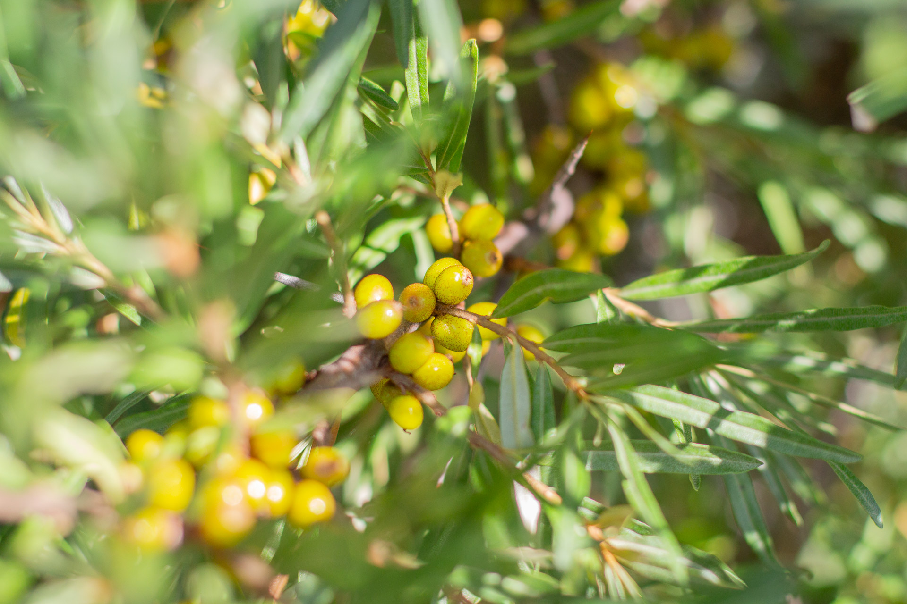

Tyrni
Tyrni
Valikoimastamme löytyy yleisimmät satoisat kotimaiset lajikkeet, joilla pärjää sekä ammattilainen että kotiharrastaja. Tyrniä istuttaessa pitää viljelmällä olla sekä hede- että emilajikkeita, jotta marjoja muodostuu. Ammattiviljelmällä noin 1/4-1/5 taimista istutetaan hedelajikkeita sekaisin viljelmälle. Kotiviljelyssä voi määrä olla hieman suurempi, jotta pölytys varmasti onnistuu.
Lajikkeemme ovat leikkauksen kestäviä eli sadonkorjuu voidaan suorittaa leikkaamalla noin 1/3 pensaan oksista jätesäkkiin ja pakastaa, jolloin marjat irtoavat oksista ravistamalla.
Taimia löytyy kolmessa kokoluokassa: 3L pyöreässä ruukussa, 9x9x9cm kanttiruukussa ja avojuurisena. 3L ruukussa olevat taimet ovat kasvaneet taimistolla vähintään kaksi vuotta, ja niissä on jo useita kasvuversoja heti hankittaessa. Kanttiruukussa ja avojuurisena myytävät taimet ovat pääsääntöisesti yksiversoisia, joten rahditus on halpaa ja viljelmän perustaminen nopeaa.
Lajikkeet
Emilajikkeet
- Tytti
- Terhi
Hedelajikkeet
- Tarmo
- Rudolf